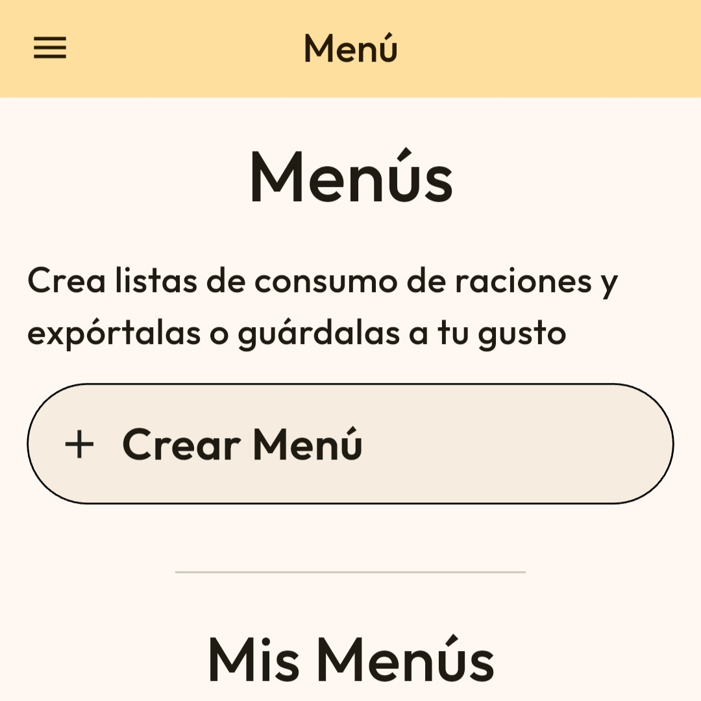
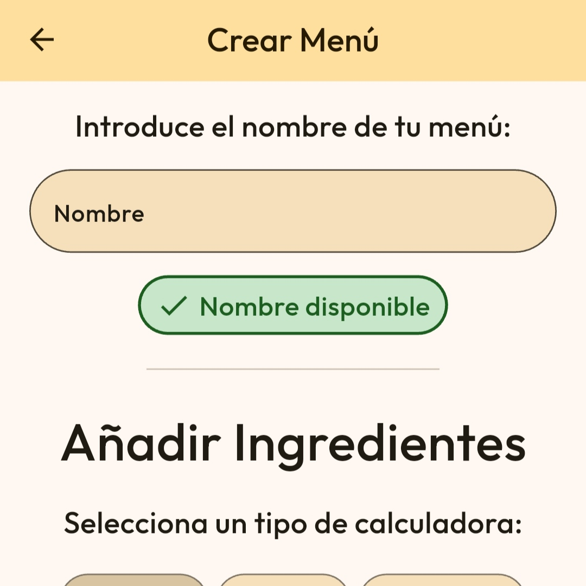
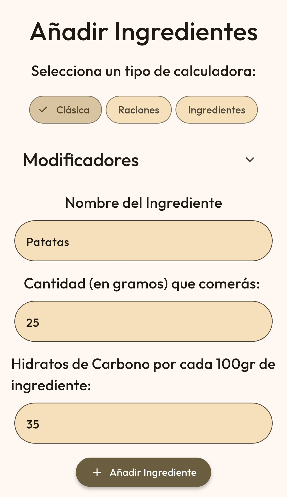
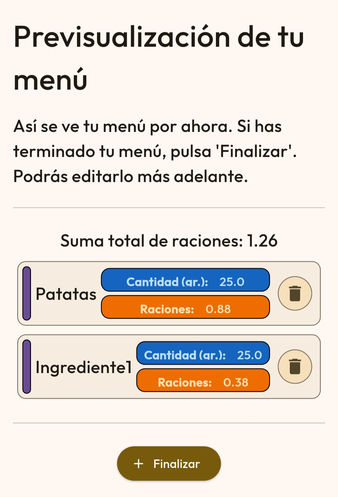
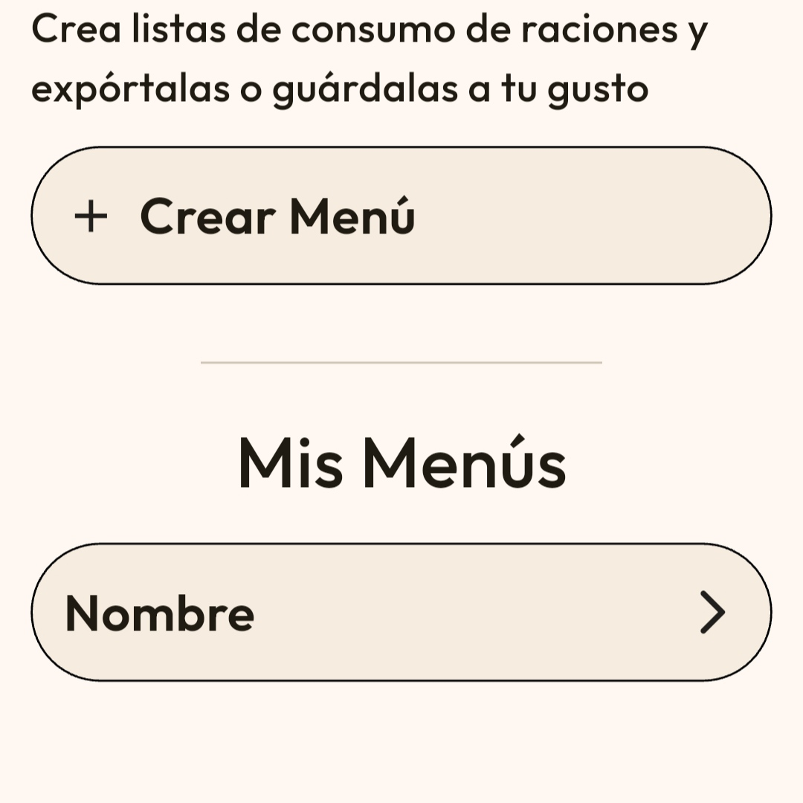
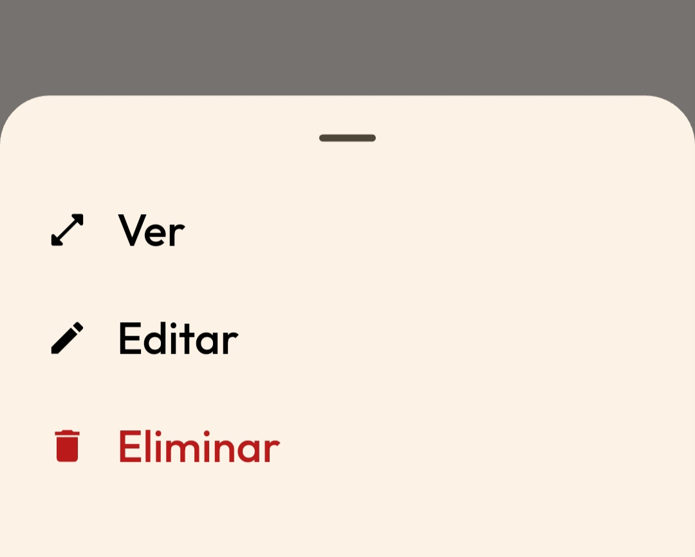
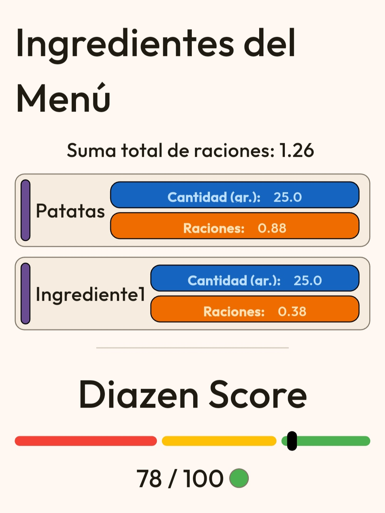
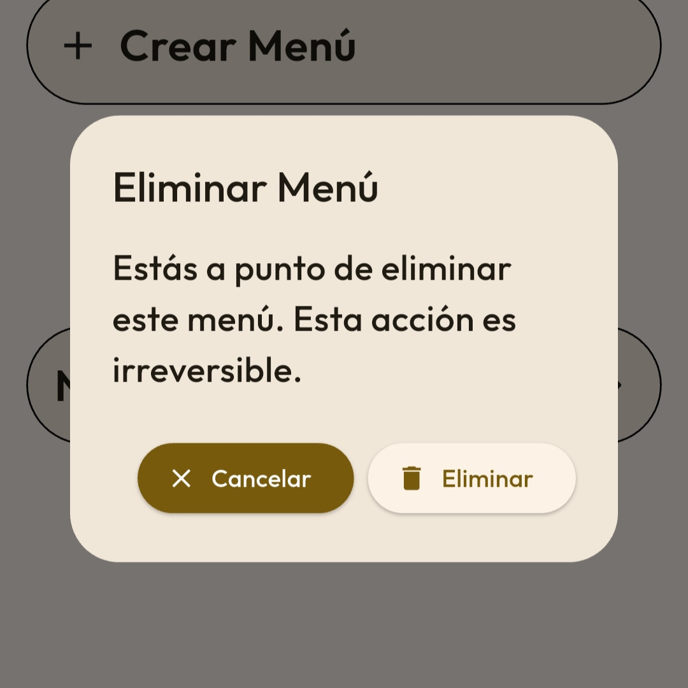

En la pantalla destinada a los menús, puedes crear un nuevo menú presionando "Crear Menú". Puedes crear tantos menús como necesites.

Ahora, procede a darle un nombre a tu nuevo menú. El nombre debe ser único. Se notifica debajo de la casilla del nombre si éste está disponible o no.
Al proceder a la zona inferior, se puede ver una interfaz como la Calculadora de Raciones. Permite calcular cada ingrediente y sumarlo a un listado total.
Pulsa "Añadir Ingrediente" para añadirlo a la lista de Ingredientes. Puedes eliminar ingredientes del menú pulsando en el ícono con forma de papelera a la derecha de la información del ingrediente.
Pulsa "Finalizar" para añadir el menú a la lista de menús. Puedes previsualizar la suma total de raciones encima del listado de ingredientes del menú.Puedes actuar sobre un menú presionando el nombre de tu menú creado previamente.

Se expandirá una pequeña ventana en la zona inferior para seleccionar qué realizar sobre dicho menú. Selecciona "Ver".
Se abrirá una ventana para poder ver tu menú creado.
Puedes actuar sobre un menú presionando el nombre de tu menú creado previamente. Se expandirá una pequeña ventana en la zona inferior para seleccionar qué realizar sobre dicho menú. Selecciona "Editar". Se abrirá una ventana para poder editar tu menú nuevamente. Tras finalizar su edición, pulsa "Finalizar".
Puedes actuar sobre un menú presionando el nombre de tu menú creado previamente. Se expandirá una pequeña ventana en la zona inferior para seleccionar qué realizar sobre dicho menú. Selecciona "Eliminar". Se abrirá una confirmación para eliminar tu menú. Confirma tu eliminación pulsando "Eliminar".
